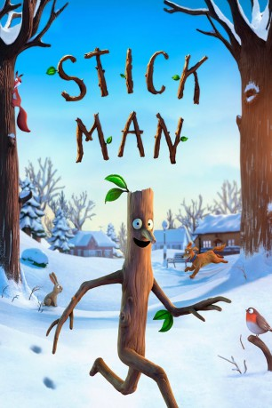

gesehen am 31.01.2017
gesehen am 31.01.2017Alternativ: Stick Man gesehen am 31.01.2017
 
 IMDB-Wertung: 7.3 / 10
IMDB-Wertung: 7.3 / 10  Metascore:
Metascore: 
Stockmann hat sich ein gutes Leben aufgebaut. Er hat eine Frau aus Holz, die ihn liebt, drei Kinder aus Holz, die ihn verehren, und sein eigenes Holzhäuschen. Doch diese Harmonie wird gestört und es beginnt eine aufregende Reise voller Gefahren. Wird er rechtzeitig zu Weihnachten wieder zu Hause sein?
Jahr: 2015
Dauer: 26 Minuten
FSK: 0
Land: England Studio: Concorde Home EntertainmentTonspuren: DTS - ,
Untertitel:
Auflösung: 1080p (1920x1080) Größe: 1136 MB
Genre: Animation/Trick, Familie, Kurzfilm, Weihnachten
Regisseur: Jeroen Jaspaert, Daniel Snaddon
Drehbuch: Maike Brochhaus
Soundtrack:
Darsteller:
 Martin Freeman als Stick Man
Martin Freeman als Stick Man Jennifer Saunders als Narrator
Jennifer Saunders als Narrator Rob Brydon als Snail / Park-keeper / Swan Dad / Frog / Beach Dad / Crab / Cat
Rob Brydon als Snail / Park-keeper / Swan Dad / Frog / Beach Dad / Crab / Cat Russell Tovey als Dog
Russell Tovey als Dog Sally Hawkins als Stick Lady & others
Sally Hawkins als Stick Lady & others Hugh Bonneville als Santa
Hugh Bonneville als SantaDatei: X:\Kinder Filme (N-Z)\Stockmann (2015, FSK0, 1920x1080).mkv seit 30.01.2017
Festplatte: Kinder-Filme+Trick
 Es gibt insgesamt 87 Filme in der Gruppe 'Kinder Filme (N-Z)'
Es gibt insgesamt 87 Filme in der Gruppe 'Kinder Filme (N-Z)'